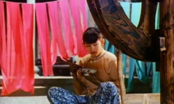
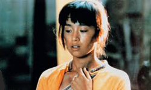
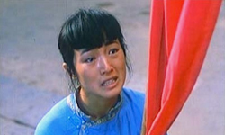
Ju Dou is a 1990 film directed by Zhang Yimou and Yang Fengliang and starring Gong Li as the title character. It is notable for being printed in vivid Technicolor long after the process had been abandoned in the United States. It was the first Chinese film to be nominated for an Academy Award for Best Foreign Language Film, in 1990. The film is a tragedy, focusing on the character of Ju Dou, a beautiful young woman who has been sold as a wife to Jinshan, an old cloth dyer.
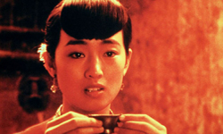
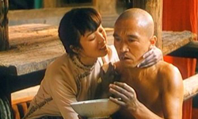
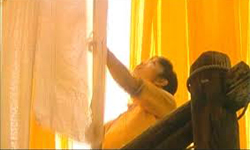
Ju Dou is a beautiful country girl who is purchased by Yang Jinshan, the elderly owner of a small fabric-dyeing business who has already beaten his previous two wives to death. The harsh treatment continues with his new wife. However, when his adopted nephew (Tianqing), who also works for him, meets Ju Dou, he falls immediately in love with her, and the feeling is reciprocated. Furthermore, the two of them eventually have a child together and the old man suffers a stroke that leaves him paralyzed from the waist down. The two lovers take over the business as they stop hiding their love for each other. Their happiness, however, does not last long.
In the original novel Tianqing is the biological nephew of Jinshan and the story itself is about incest by affinity. The makers of the film version decided not to use the incest angle. In the film, Tianqing and Jinshan are not biologically related, and Ju Dou only begins her relationship with Tianqing after learning that he and Jinshan are not related.
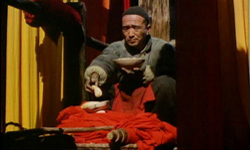
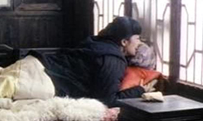
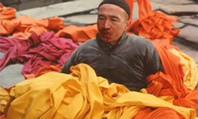
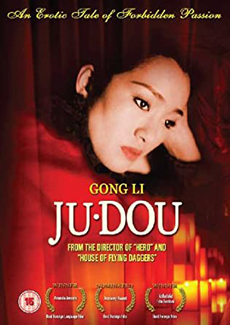
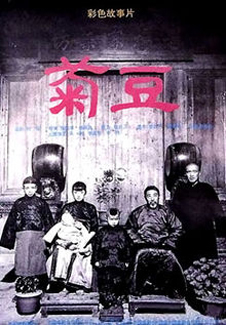
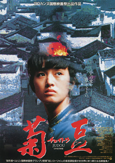
The ending of Ju Dou is as lurid and melodramatic as anything conceived by Poe or filmed by Buñuel, and it exhibits justice completely untempered by mercy. But long before the gory finale, the Chinese censors had apparently already decided to suppress this film which was banned for a few years in China, but the ban has since been lifted. The Chinese government gave permission for its viewing in July 1992.
When the Technicolor company abandoned its classic three-strip process for reproducing colour on film, two of its factories were closed down but the third was packed up and sold to China, and that is why the bright colours in the vats of the textile mill may remind you of a brilliance not seen in Hollywood films since the golden age of the MGM musicals. Not that this story would have been very easily set to music.
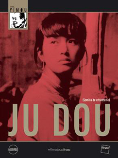
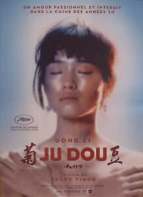
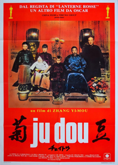